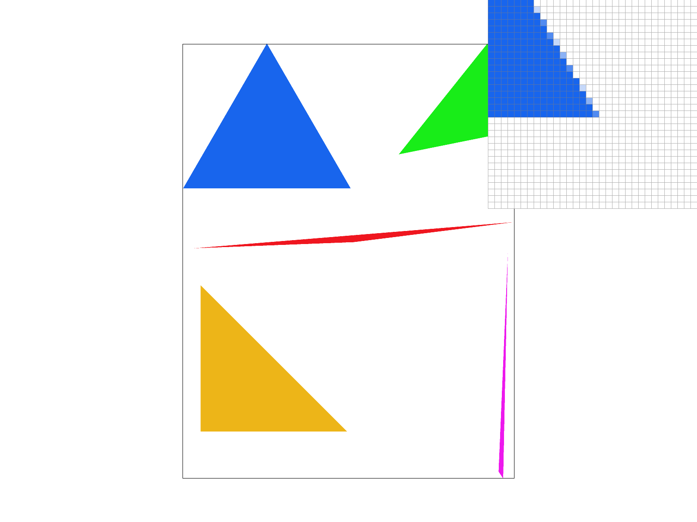
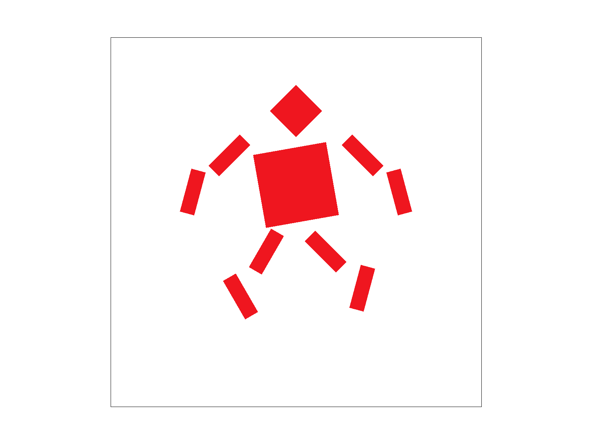
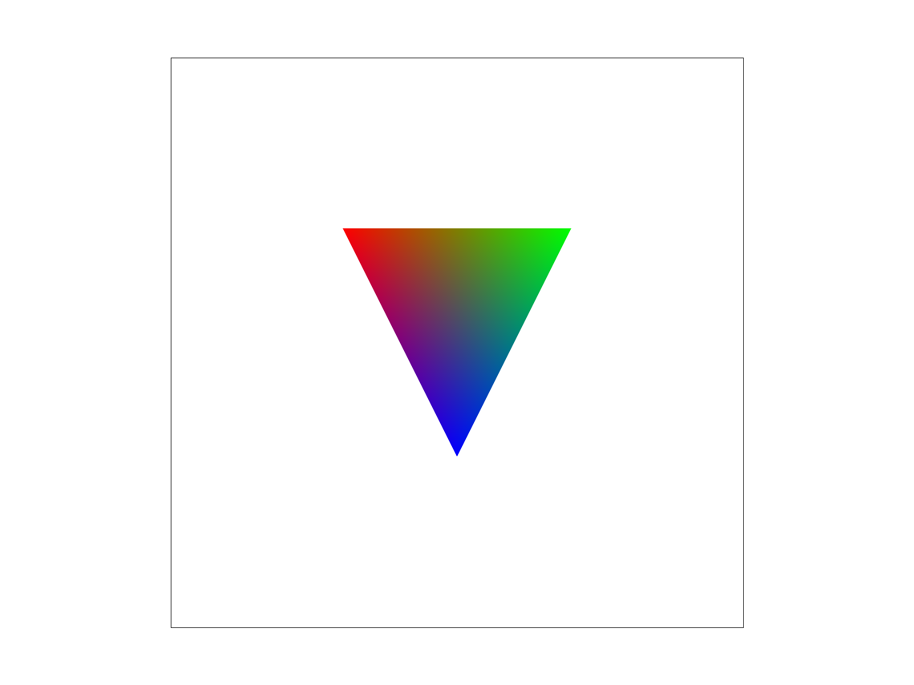
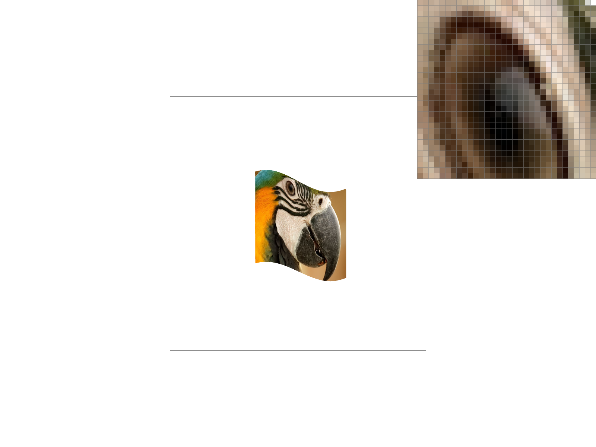
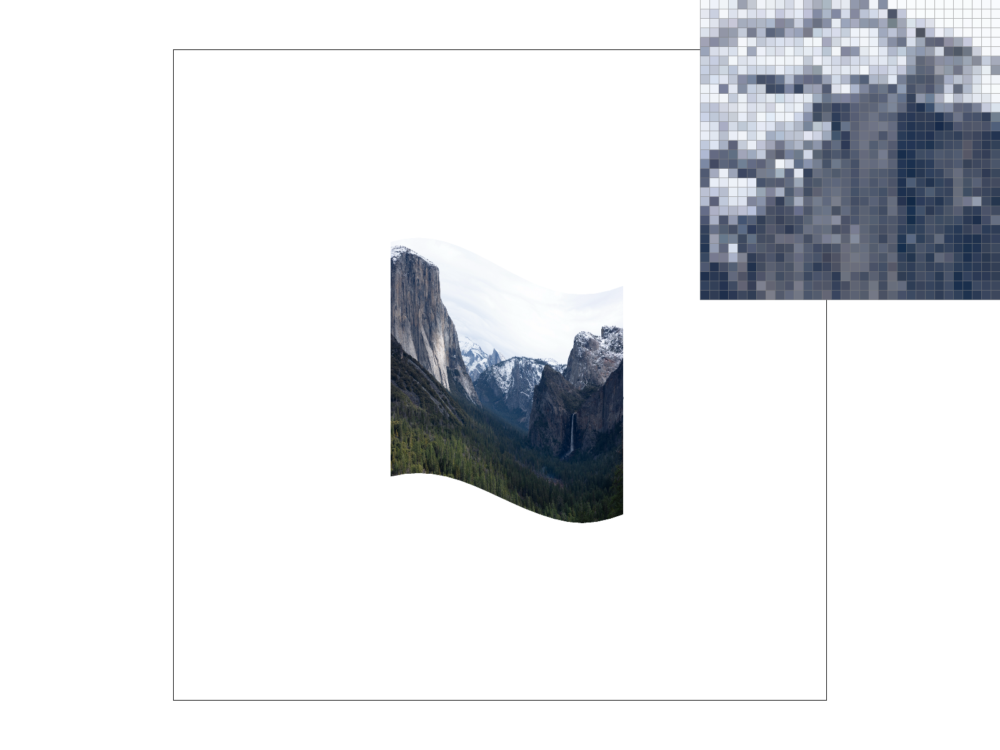

CS184/284A Spring 2025 Homework 1 Write-Up
Link to webpage: https://cal-cs184-student.github.io/hw-webpages-cappu/hw1/index.html
Link to GitHub repository: https://github.com/cal-cs184-student/sp25-hw1-cappuccino
Overview
In this assignment I have implemented a basic rasterizer that can render basic triangles, interpolated color triangles and textured triangles, meanwhile enabled the rasterizer with multiple sampling methods, including multi-level supersampling and multi-level mipmap sampling.Task 1: Drawing Single-Color Triangles
In this task, the triangles are rasterized with a basic direct sampling, wich means having one sample point per each pixel on the screen. The essence of this process is to do triple line perpendicular test and use the positivity of the results to decide wether the point is on the edge, inside the triangle or outside the triangle.

|
Main Steps
The algorithm specified in the `RasterizerImp::rasterize_triangle` are designed in following steps:- Initialize the variables used in the algorithm
- `Vector2D v[3]`: An array to store the coordinates of the three vertexes.
- `size_t hUpperBound, hLowerBound, wLowerBound, wUpperBound`: the boundaries of the traverse area.
- Calculate the square bounding box for the triangle.
- Traverse the area by testing each point.
- Do the line perpendicular test of the point and each edge with a helper function `float LinePerpendicularTest()`.
- If the test results includes zeroes, the point is judged to be on edges.
- According to the openGL/Direct3D's rule, judge whether the vertex is belonged to a top-left edge or not, and if it is an end point or not.
- Fill the pixel accordingly if it belongs to the top-left edges.
- If the test results are all positive or negative, the point is judged to be inside the triangle.
- Fill the pixel accordingly if it belongs to the top-left edges.
Mind the gap!
- The order of the verticies is not a matter since one point's line perpendicular results can be all negative to prove it is in the triangle.(This would happen in clockwise scenario.)
Key math/code
Line perpendicular test:float LinePerpendicularTest(const Vector2D& p, const Vector2D& p0, const Vector2D& p1) {
return (p.y - p0.y) * (p1.x - p0.x) - (p.x - p0.x) * (p1.y - p0.y);
}
Task 2: Antialiasing by Supersampling
In this task, I have mainly modified `void RasterizerImp::rasterize_triangle` , `void RasterizerImp::fill_pixel()`, `void RasterizerImp::resolve_to_framebuffer()` . The main modification happened in the data structures and down-sampling in resolve function while the algorithm steps remained the same with task1. (For line perpendicular test and edge point check.)Modifications
The modification happened in sample_buffer. It is resized to width * height * sample_rate.
In void RasterizerImp::rasterize_triangle, all of the points are upsampled by adding a sample point traverse inside each actual pixel traverse (of the bound box). Following steps are added:
- Calculate segments (the gap between each sample points) in float.
- Create a local sample point set for each pixel
Vector2D points[sample_rate] - Traverse each point.
- Following the steps in Task1
- The fill_pixel invoke is modified to enter the correct position in buffer of each sample point.
In void RasterizerImp::fill_pixel(), I added an input is_superSample at the end of parameter list, default value as false, to ensure point rasterization and line rasterization remain normal. Additionally, for invocations in rasterize_triangle where is_superSample = true, the x, y are inputted in upsampling space. For is_superSample = false, they are in normal pixel space. It is following steps:
- Check if
is_superSample = true- Directly fill the buffer corresponding with input x, y.
- Else
- Calculate the coordinates of all sample points in the corresponding pixel.
- Traverse and fill the corresponding buffer position.
In RasterizerImp::resolve_to_framebuffer(), it downsamples sample_buffer into rgb_framebuffer_target in following steps:
- Traverse pixel space.
- Add color values at all sample points.
- Divide the sum by sample rate, to get the color of each pixel.
Sampling Results
|
|

|
|
|
From the results, we can see the supersampling enabled 4x and 16x image has a blury effect over the edges of the triangle. That is the result of box filtering, implemented with supersampling. Genereally it effectively reduces the aliasing artifacts when you look at the whole image..
Task 3: Transforms
In this task, I tried to make the robot seemed to be jumping.|

|
Task 4: Barycentric coordinates
Barycentric coordinates are a coordinate system used to express the position of a point within a triangle. For any point P inside a triangle, its barycentric coordinates are represented as three values (\(\alpha\), \(\beta\), \(\gamma\)) that satisfy:
Where:
- (\(\alpha\), \(\beta\), \(\gamma\)) represent the weights of point P relative to triangle vertices A, B, and C
- Each weight represents the relative distance from P to the opposite edge
- When the point is inside the triangle, all weights are positive
Geometric Interpretation
The geometric meaning of barycentric coordinates can be understood as:
- \(\alpha\) equals the ratio of the area of triangle PBC to the total area of triangle ABC
- \(\beta\) equals the ratio of the area of triangle PCA to the total area of triangle ABC
- \(\gamma\) equals the ratio of the area of triangle PAB to the total area of triangle ABC
Math
Given point P(x,y) and triangle vertices A(\(x_1\),\(y_1\)), B(\(x_2\),\(y_2\)), C(\(x_3\),\(y_3\)), barycentric coordinates can be computed as:
|

|
Color Interpolation:
- Enables smooth color transitions within triangles
\[ Color_P = \alpha Color_A + \beta Color_B + \gamma Color_C \]
Task 5: "Pixel sampling" for texture mapping
Pixel Sampling
Nearest Sampling:For each sample point in pixel space, find its nearest texel point on the texture and use that color precisely.
Bilinear Sampling:For each sample point in pixel space, sample it with 4 closest texel point on the texture. The colors of 4 texels are processed with 3 times of linear interpolation by creating two Lerps between two pairs of texels, then interpolating between the two Lerps.
Implementation
The texture sampling is mainly implemented in Color Texture::sample_bilinear() and Color Texture::sample_nearest().
Nearest implementation steps:
- Multiply the uv coordinates with width and height.
- Round the result and shift the rounding in two axes accordingly with the relative direction of uv coordinates and result.
- Get the color from texture.
Bilinear implementation steps:
- Multiply the uv coordinates with width and height.
- Get the 4 closest texels' colors.
- Create two Lerps between two pairs of texels.
- Interpolate the colors between the two Lerps.
Sampling Results
|
|
|
|
|

|
From the results, we can see that the bilinear sampling is smoother than the nearest sampling in both 1x and 16x. The 1x nearest sampling is aliasing while the 16x nearest sampling is much better. There is no huge difference between bilinear sampling with 16x and nearest sampling with 16x thanks to the supersampling, making the bilinear being more efficient in low sample rate.
Task 6: "Level Sampling" with mipmaps for texture mapping
Level Sampling
Level Calculation
The level of detail (D) for a pixel is calculated based on the rate of change in texture coordinates. For a point P with texture coordinates (u,v), we compute:
The level D is then computed as:
Where:
- L represents the maximum rate of change in texture coordinates
- D is the final mipmap level (may be fractional)
- Negative D values are clamped to 0
- D values larger than the maximum mipmap level are clamped to that maximum
Implementation Steps
- Calculate texture coordinate derivatives (\(\frac{\partial u}{\partial x}\), \(\frac{\partial v}{\partial x}\), \(\frac{\partial u}{\partial y}\), \(\frac{\partial v}{\partial y}\))
- Compute L using the maximum of the two partial derivatives
- Calculate D using log base 2
- For level sampling:
- Zero: Always use level 0 (highest resolution)
- Nearest: Round D to nearest integer
- Linear: Interpolate between the two nearest levels
Sampling Results
|
|

|
|
|
|

|
|
From these results, we can observe:
- Level Zero sampling shows the most detail but may exhibit aliasing at distances
- Level Nearest provides sharp transitions between mipmap levels
- Level Linear offers the smoothest transitions between different detail levels
- Pixel Linear sampling further smooths the texture appearance compared to Pixel Nearest
- The combination of Level Linear and Pixel Linear provides the highest quality result with smooth transitions both in space and across mipmap levels